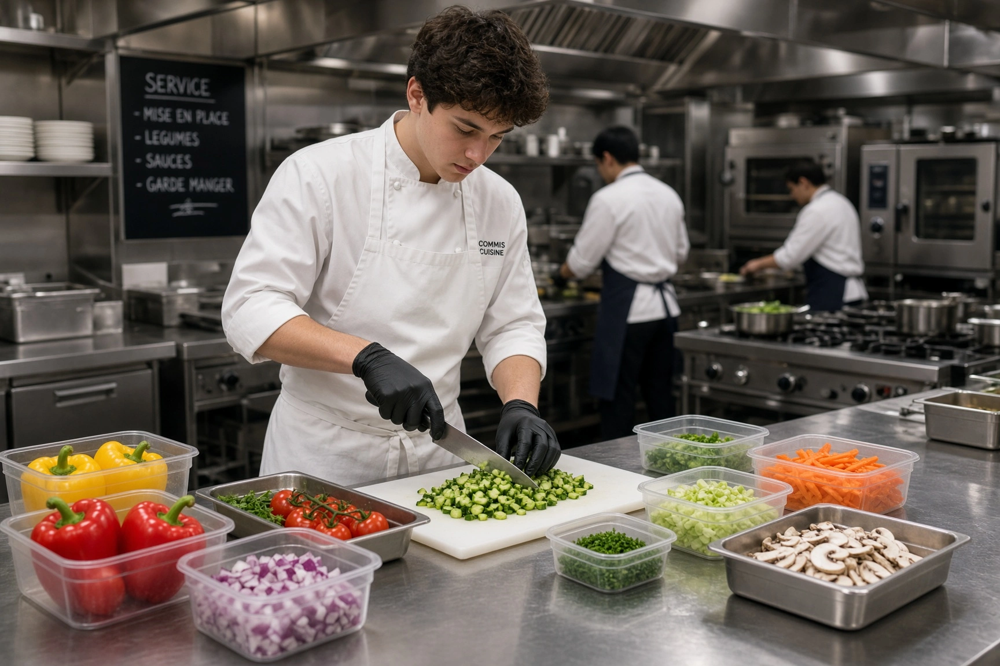

Salaire d'un commis de cuisine en 2026 : brut, net et grille HCR
Le commis de cuisine est le premier échelon de la brigade, et son salaire est fixé par la grille de la convention collective HCR. Depuis le 1er novembre 2026 (avenant n°36), un commis titulaire d'un CAP touche au minimum 2 148 € brut par mois en 39h. Ce guide détaille le minimum par échelon, le net, le classement selon le diplôme, le cas des apprentis et la progression vers chef de partie.

Combien gagne un commis de cuisine en 2026 ?
Le salaire minimum d'un commis dépend de son classement dans la grille HCR, entre le niveau I et le niveau II. Dans la branche, la durée de référence est 39 heures par semaine : c'est sur cette base que la plupart des commis sont payés.
- Commis débutant sans diplôme (I/1) : 2 102 € brut par mois en 39h, soit ≈ 1 618 € net.
- Commis titulaire d'un CAP cuisine (au moins II/1) : 2 148 € brut par mois en 39h, soit ≈ 1 654 € net.
- Commis confirmé (II/3) : 2 293 € brut par mois en 39h, soit ≈ 1 766 € net.
| Niveau / échelon | Taux horaire brut | Brut mensuel 35h | Brut mensuel 39h | Net estimé 39h |
|---|---|---|---|---|
| I/1 | 12,31 € | 1 867 € | 2 102 € | ≈ 1 618 € |
| I/2 | 12,37 € | 1 876 € | 2 112 € | ≈ 1 626 € |
| I/3 | 12,47 € | 1 891 € | 2 129 € | ≈ 1 639 € |
| II/1 | 12,58 € | 1 908 € | 2 148 € | ≈ 1 654 € |
| II/2 | 12,80 € | 1 941 € | 2 185 € | ≈ 1 683 € |
| II/3 | 13,43 € | 2 037 € | 2 293 € | ≈ 1 766 € |
Minima conventionnels de l'avenant n°36 à la convention collective HCR (IDCC 1979), applicable depuis le 1er novembre 2026. Base 35h = 151,67 h × taux ; base 39h = 151,67 h × taux + 17,33 h × taux × 1,10 (heures 36 à 39 majorées de 10 %). Net estimé = brut × 0,77, à titre indicatif. Hors avantage en nature repas, primes et heures au-delà de 39h.
Quel niveau HCR pour un commis de cuisine ?
La classification HCR (avenant n°30 du 31 mai 2022) range le commis de cuisine entre le niveau I, échelon 1 et le niveau II, échelon 3. Le classement dépend des fonctions réellement exercées, mais aussi du diplôme : d'après les règles de classification de la branche, un salarié titulaire d'un diplôme de niveau 3 (CAP cuisine) doit être classé au minimum en II/1, et un titulaire d'un diplôme de niveau 4 (bac pro cuisine) au minimum en II/3. Le CQP commis de cuisine donne également accès au niveau II/1.
| Profil | Classement habituel | Brut 39h minimum |
|---|---|---|
| Débutant sans diplôme ni expérience | I/1 à I/3 | 2 102 € à 2 129 € |
| Titulaire d'un CAP cuisine ou du CQP commis | II/1 au minimum | 2 148 € |
| Titulaire d'un bac pro cuisine | II/3 au minimum | 2 293 € |
Classements issus des règles de classification de la branche (avenant n°30), tels que repris par les éditeurs de paie spécialisés. Vérifiez toujours la fiche de poste réelle : un commis qui tient seul une partie relève d'un niveau supérieur.
Commis apprenti : le barème HCR
Beaucoup de commis démarrent en apprentissage (CAP cuisine en 2 ans, puis mention complémentaire ou BP). En HCR, l'avenant n°35 fixe un barème plus favorable que le Code du travail : l'apprenti est payé en pourcentage du minimum conventionnel du niveau I selon son âge et son année de contrat.
- 16-17 ans : 35 % en 1re année, 45 % en 2e année, 59 % en 3e année.
- 18-20 ans : 45 %, 55 %, puis 71 %.
- 21 ans et plus : 55 %, 70 %, puis 82 %.
- 26 ans et plus : 100 %.
Concrètement, un apprenti de 18 ans en 2e année de CAP touche au moins 1 032 € brut par mois (35h). Montants complets dans notre grille des salaires. Pour les contrats signés depuis le 1er mars 2025, le salaire n'est exonéré de cotisations salariales que jusqu'à 50 % du SMIC (933,51 €).
Heures supplémentaires et avantages : le salaire réel du commis
Le minimum conventionnel n'est qu'un plancher. Dans les faits, le salaire d'un commis varie surtout avec le volume d'heures, la région et le type d'établissement : beaucoup d'offres pour un commis débutant restent proches du minimum, tandis qu'un commis expérimenté en restauration gastronomique ou en Île-de-France est généralement payé au-dessus.
Ce qui s'ajoute au salaire de base
- Heures supplémentaires : en HCR, les heures de la 36e à la 39e sont majorées de 10 %, de la 40e à la 43e de 20 %, et au-delà de 50 %.
- Avantage en nature repas : chaque repas pris sur place est évalué à 4,35 € (minimum garanti). Il s'ajoute au salaire et ne peut pas servir à atteindre le minimum conventionnel. Détail dans notre guide de l'avantage en nature repas.
- Travail de nuit, dimanches et jours fériés : contreparties prévues par la convention, voir la convention collective HCR.
Notre modèle de planning gratuit, compatible convention HCR, vous aide à maîtriser les heures et la masse salariale de votre brigade.
Accéder au planning →Évolution : de commis à chef de partie
Le poste de commis est un passage. Après 2 à 5 ans selon les établissements, un bon commis devient demi-chef de partie (III/1, 2 320 € brut en 39h) puis chef de partie. La progression d'échelon n'est pas automatique en HCR : elle doit être formalisée par un avenant au contrat de travail.
Pour aller plus loin : le salaire d’un chef de partie, puis celui d'un second de cuisine et d'un chef de cuisine. Toute la progression est résumée dans notre grille des salaires cuisiniers.
Questions fréquentes : salaire commis de cuisine
Quel est le salaire net d'un commis de cuisine débutant ?
Un commis débutant sans diplôme (niveau I/1) touche au minimum 2 102 € brut par mois en 39h, soit environ 1 618 € net. Avec un CAP cuisine (au moins II/1), le minimum passe à 2 148 € brut, soit environ 1 654 € net (grille HCR, avenant n°36).
Un commis de cuisine est-il payé au SMIC ?
Seul le premier échelon de la grille (I/1, 12,31 €/h) est égal au SMIC. Un commis titulaire d'un CAP doit être classé au minimum en II/1, soit 12,58 €/h depuis le 1er novembre 2026 : il est donc payé au-dessus du SMIC.
Un commis avec un CAP est-il mieux payé ?
Oui. D'après les règles de classification de la branche HCR, un diplôme de niveau 3 comme le CAP cuisine donne droit au minimum au niveau II/1, soit 2 148 € brut par mois en 39h, contre 2 102 € pour un débutant non diplômé.
Un commis de cuisine travaille-t-il 35h ou 39h ?
La durée légale est de 35 heures, mais la durée de référence dans la branche HCR est historiquement de 39 heures. Les heures de la 36e à la 39e sont majorées de 10 %, ce qui ajoute environ 235 à 260 € brut par mois au salaire d'un commis.
Combien de temps pour passer de commis à chef de partie ?
Il faut en général 2 à 5 ans selon l'établissement, la formation et la polyvalence du commis. Le passage d'échelon n'est pas automatique en HCR : il doit être acté par un avenant au contrat de travail.